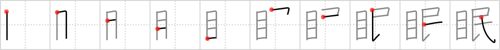

眠
← →
sleep

Reading:
On-Yomi: ミン — Kun-Yomi: ねむ.る、ねむ.い
Heisig story:
Eyes . . . people.
Koohii stories:
1) [PepeSeco] 26-9-2006(225): In an Orwellian sense, the eye watching the people never sleeps.
2) [Raichu] 8-7-2007(63): People need to close their eyes and sleep.
3) [astridtops] 16-12-2006(34): The little boy from The Sixth Sense couldn't sleep because before his very eyes he saw a dead crowd of people everywhere.
4) [nest0r] 13-4-2008(28): I sleep with one eye open, because the people are dangerous and may revolt at any time, you can't trust the unwashed masses.
5) [snallygaster] 25-5-2008(19): (inspired by PepeSeco's) The Orwellian-style government has a mysterious floating eye that floats silently through the night, looking in windows, watching the people while they sleep.